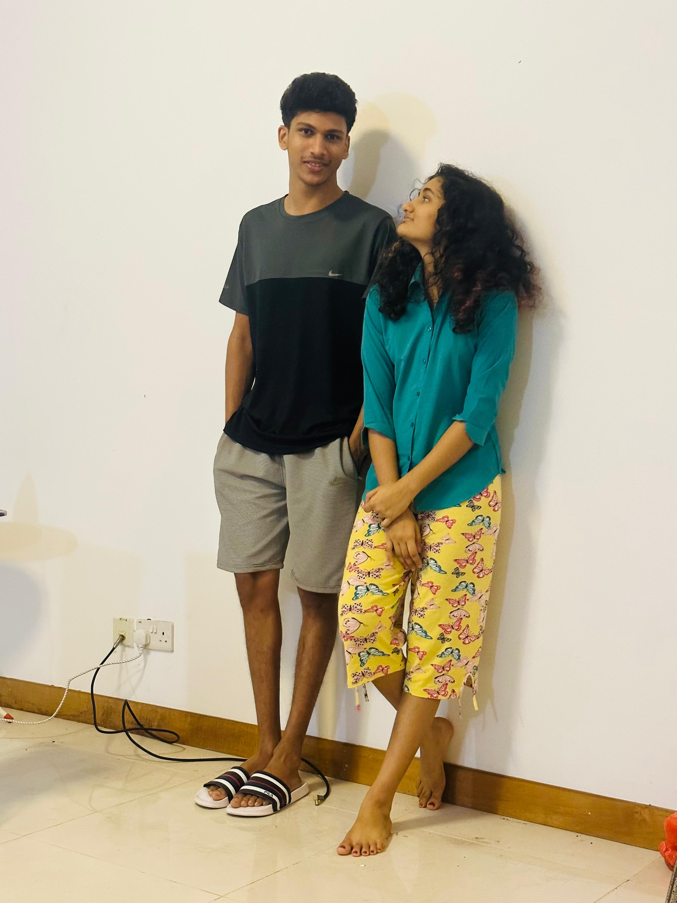
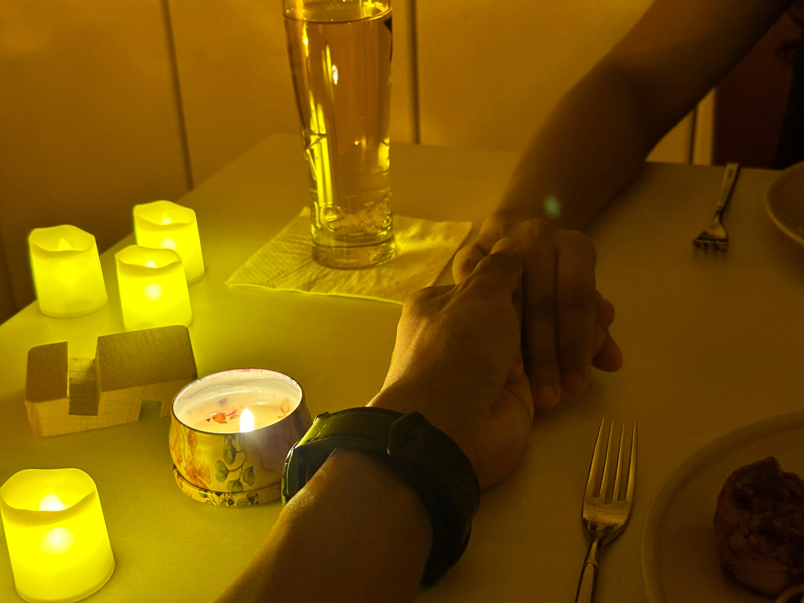

My handsome Kichu in that classic black and white shirt. I still don't know njan enthina ee pic screenshot eduth vechirunne enn. You were looking sooo good kichu, I really liked you for so long, even before we were us. I don't know njan ath realise cheyanjath ahno atho cheythittum evdeyoo olupich vechathano enn, that's why its ....... A World Seen Only By Me, and nothing’s ever been the same since.
This pic ith nee enikk nee nattil poyappo ayachaya and i still remember appo okey njan ninnod stiram vazhakk idumarunnu nee vilikkilla enn paranj and etra choichitta oru pic ayache and for a long time ee pic arnnu ente chat wallpaper. You have no idea kichu how much time I spent looking at this pic.This pic holds my heart, Kichu more than words can say.

Kichu njan ninnod paranjitt indo enn arilla but I really love flowers and ath oral vangi thara enn paranjal..... you gave me them on the most special occassions. A memory always close to be is nee first time Bishan il flowers vaangi oru cute boyne pole like a quiet promise from a boy I'll never forget. You're special Kichu, forever in the petals of my heart.
You have no idea my boy how handsome you look in this. JW a place for stolen glances and quiet smiles. Nee work cheyunne oke edaikk kanumbo I really feel bad kichu, sometimes you look really tired aa weight ellam edukkunne knaumbo entho poleyanu. You are really hardworking kichu just nee ente BF ayond parayunne alla but truly you are blessed with tooo many good qualities.
Our mirror selfie , just us being us. I really love this pic kichu like how close we are to each other, the way you hold me hug me, I really see a genuine smile on my face whenever I am with you. I don't even know kichu is it still just love?? I am feeling something deeper, something beyond words. All I want is to see you happy always my dear.

That late night energy, the giggles, the love 🌙
I really love this side of you, idiot the baby side enna cute ahn ariyoooo... You're way too cute to handle. Please, don't ever change this adorable side. Because honestly? I love you just like this.
I got the phone, but you stole the frame ❤️. Nammal orumich poyi phone vangitum ath kazhinj avide oke kai pidich nadannathum, chumma think cheyumbo koode it feels a lot kichu something we can't say, something we can't express in words, something which only can be felt. Nee chirich kanan enth rasam ahn ariyooo, somtimes I really wonder how lucky I am to be yours, cozz you are too good kichu.

EE pic we look good together like oru picture perfect pair 💕 Aa oru roomil we have a lot of memmories. I want to be this close to you forever, you idiotee. In your embrace, right next to you through thick and thin.
I promise I'll pamper you like this thoughout our journey. someyimes enikk thonnum ninne oru kunjuvavene pole nokkanm enn. I know one thing for sure that I am madly in love with you 🤍
UFF enna lookane specially aa shirt😏 I know ninakk aa shirtinte Kai istallanu but you are looking soo good. Pandoke oru kadayilo alle online oke enikk entha vanaga enn nokkum but ippo ippo evde poyalum ninakk olle enthelum indo ninakk avashaym aaya enthelum indo enn nokan thodangi. I dont know kichu 24 hrsil ninne patti think cheyatha oru moment koode illa, nee entharikum cheyunne neeyum enn orkarikko, food kazch kanuvo, urangi kanuvo work inu poyo, ippo busil arikum angane angne. what are you doing to me kichu my brain feels more like yours than mine. But the crazy part is I love it. I love you.


Sunset skies and you, both dangerously beautiful in their own calm way🌇
Nammal orumich iriunn padikkunne okke enna rasam arunn alle... aa timeil full time njan ninte koode thanne indarnnu I was genuinely happy with you, ippo njan ninne valland miss cheyunind eppozhum ninte koode irikan patirunnel kollarnnu enikk purathum ponda onnumvenda I just want to be beside you cuddle with you, cook for you, orumich movie kananam our own special moments and live in those tiny, quiet, beautiful moments that only we understand ....🙂
Our smiles in one frame that's all I need 🥺 I'll forever look at you like this with eyes full of love and admiration, like you're my whole world, because you are.

Valentine’s Day wrapped in warmth & you 🌹. This day was truly special, a day memory I'll forever cherish. we look soo good together nahh 😌 In that frame, we weren't posing we were poetry that never needed a pen.
EE pic its my fav pic of all the ones we have taken. Ithil nammal matram aayi kittan njan kore nokitt ind and finally I got it, Now that I have it, it's staying with me... forever. You don’t just fill the frame, Kichu… you complete it. Like every inch of you was made to fit the spaces in me 🤍
Two hands. One promise I’ll hold onto yours like this, forever💍

I'd wait a thousand years just to be with you, Through every smile, every laugh, every moment we share. You're my forever, my guiding light, The reason my heart keeps beating strong. Today, I celebrate you The one I've loved through time and will keep loving always ♥️